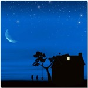

La casa era piccola, fatta di pietre, aveva due piani, c'era inoltre la soffitta che dalla finestra rotonda si poteva vedere il paesaggio lì intorno. Tanti piccoli sassi per terra, dal cortiletto scendevano verso il paese e facevano quella che chiamavano "la strada dei sassi". Il paese erano circa duecento case, tutte più o meno di pietra o legno, qualcuno l'aveva fatta interamente di cemento, ma erano poche. Nasceva il paese alle pendici di una montagna e poi saliva più in alto. La nostra casa era l'ultima, quella più in alto cioè. Mi ricordo che in inverno era tutto bianco, per via della neve, faceva anche freddo. Un giorno che stavamo aspettando il vetro buono per la soffitta, dopo che alcuni bambini l'avevano rotto cercando di colpire dei pettirossi ( o magari l'avevano fatto apposta ), bene eravamo lì, io e mio cugino Alessandro a guardar fuori. E c'era in fondo alle valle il fiume che la divideva in due parti. Una era quella dove stavamo noi, l'altra dove crescevano quei due sempreverdi e intorno c'era solo la neve. Gli altri boschi erano più lontano, alcuni alberi erano spogli, altri invece no. Guardavo i sassi sotto la finestra che erano piccoli sassi grigi. Più piccoli delle rocce vicino al fiume, mi facevano ricordare quando guardavo il fiume. Le acque tumultuose correvano, sgusciando tra i sassi e invece altri pezzi che si scontravano, facevano gli schizzi che andavano fin sopra le rocce. Mi piaceva tutta quella agitazione del fiume, così veloce, incalzante che continuava a gorgogliare, non so se perché si divertiva o perché stava affogando. Comunque se continuava a farlo penso gli piacesse... tutto questo mi piaceva molto, eppoi perché il fiume passava tra i boschi, così che mentre guardavi l'acqua magari ti distraevi per il verso di un animale e allora guardavi gli alberi, e loro calmi se ne stavano lì a guardarti. Ciò mi sembrava strano, voglio dire, il fiume che scappava e quegli altri, gli alberi e l'erba, fermi. Bene, ora dalla mia finestra nella casa vedevo solo una strisciolina azzurra, laggiù in lontananza, però mi immaginavo tutto questo. Alessandro mi disse di dover fare una commissione per la mamma, così scese e io rimasi da solo in soffitta. Appena sopra il fiume nasceva la montagna e beveva l'acqua del fiume; ho notato che se guardi una montagna e osservi da dove parte, non puoi fare a meno di guardare dove arriva, cosicché iniziai a guardare i contorni della montagna, seguendoli fino ad arrivare in alto alla montagna, dove dietro non c'erano più le altre montagne ma bensì il cielo azzurro. Il bello era che proprio dove finiva la montagna c'era il contorno e poi di colpo diventava tutto azzurro. Era davvero grande quella montagna, così grande che non la potevi vedere tutta insieme in una volta sola, ma dovevi guardare prima un pezzo e poi un altro. Magari capitava che una parte neppure la potevi vedere perché davanti c'era un'altra montagna e mi accorsi che mentre guardavo la montagna davanti poi guardavo anche quella dietro, infatti ad un certo punto, verso il basso, non si poteva più dire se la prima faceva parte della seconda o se invece era la seconda che era un pezzo della prima. Lentamente mi venne il dubbio che forse tutte le montagne, quella davanti, quella dietro, eppoi quell'altra laggiù... insomma tutte, erano in verità un'unica grande montagna. Ma non c'erano solo le montagne, poi venivano le colline, poi le pianure che arrivavano fino al mare eppoi fino all'oceano. E quanto grande era l'oceano, immenso ! Così grande che non riuscivi nemmeno a vedere fin dove arrivava, tanto era lontana la terra dove finiva. Ma più ci pensavo più capivo che c'era qual cos'altro, sotto il tappeto d'acqua si nascondevano abissi irraggiungibili che poi sono il continuo delle montagne di prima. E sopra il mare c'era il cielo che neppure lui finiva lì, mi hanno detto che in alto dopo le nuvole, che già sono molto in alto, il cielo continua e diventa lo Spazio dove ci sono le stelle. Anche il nostro Sole è una stella, ma per arrivarci ci impiegheremmo una vita... e tutte le altre centinaia di stelle che si vedono di notte? Si dice che ognuna di esse sia più grande di almeno cento volte il nostro sole, il fatto è che già noi il Sole lo vediamo grande... chissà allora quanto sono lontane quelle stelle! Ma le stelle che vediamo noi sono quelle della nostra galassia e già, perché poi ci sono pure le altre galassie, e quelle sono più lontane ancora. E poi? Eppoi c'è l'Infinito che è talmente lontano che non ci arriveresti mai, in modo che anche se dovessi avvicinarti quello si allontana man mano che ti avvicini. Una cosa impensabile. E in tutto lo Spazio non ci sono solo le stelle, ci sono anche i pianeti, decine e decine di miliardi, e poi le lune, ancora di più... e tutta la gente che ci vive sopra? Quanta sarà mai? Improvvisamente mi sento piccolo, così ora, mentre aspetto il vetro buono per la finestra, vedo mio cugino che mi tira i sassi.